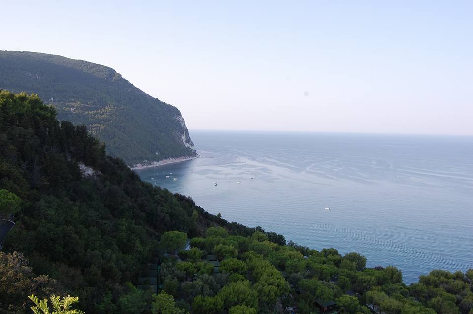
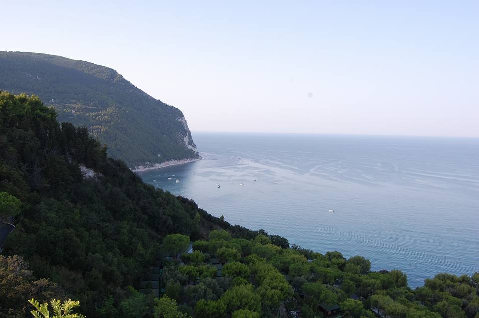
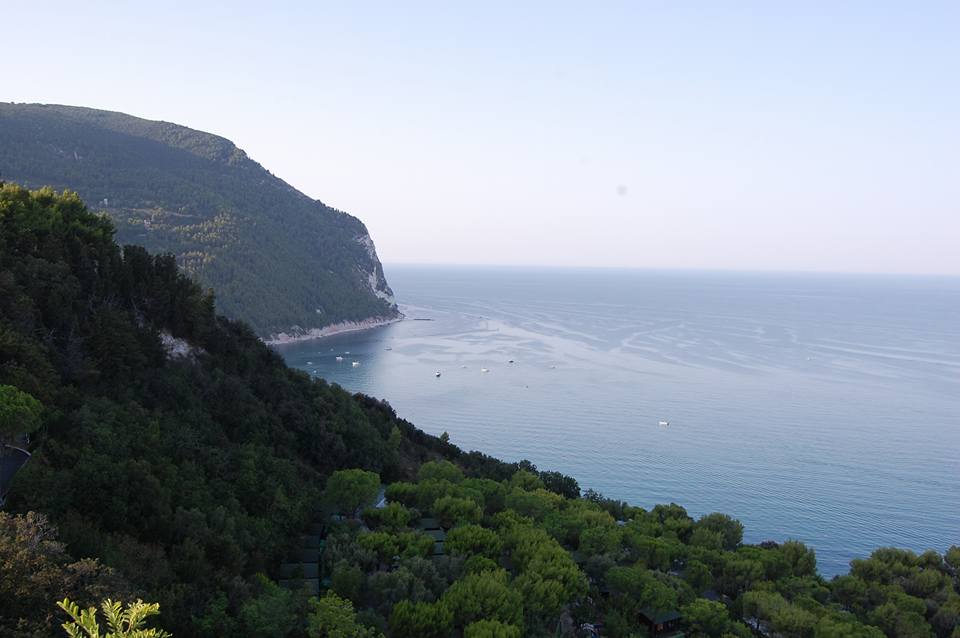

 A beautiful restored farmhouse located in the peace and tranquility of the Marche countryside, yet is only a 5 minute drive from the picturesque and bustling town of Recanati. The stunning beaches of the Marche coastline are only a 20 to 25 minute drive away, whilst the Sibilini mountains can be reached in an hour.
